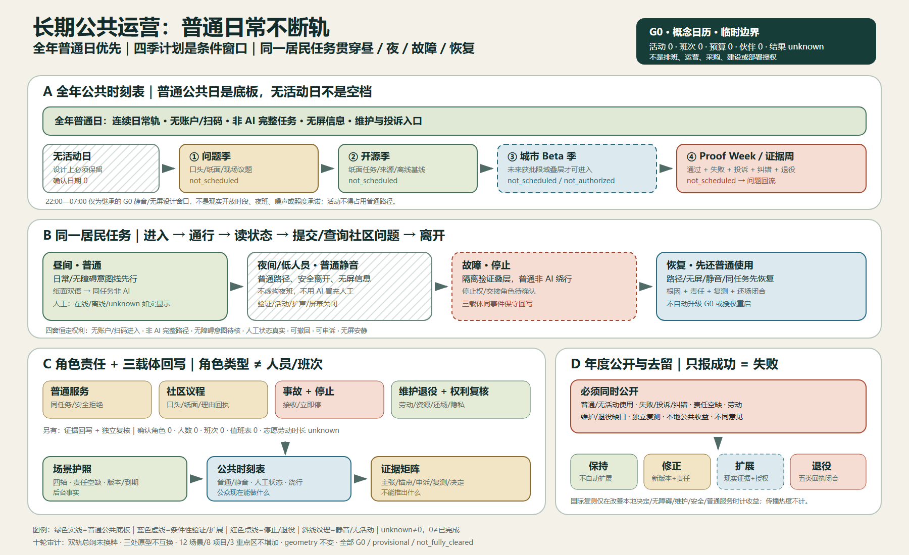
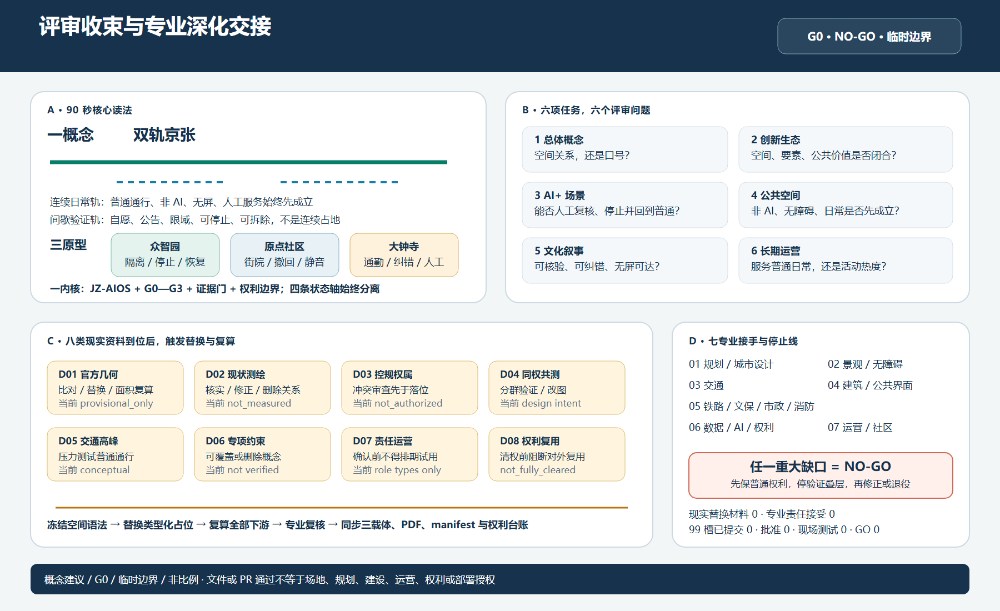
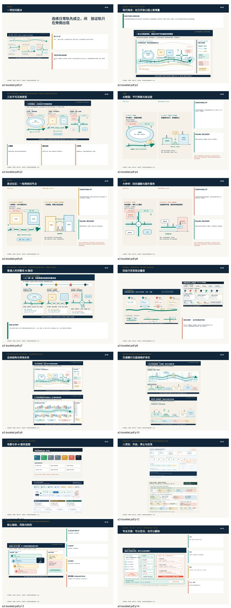
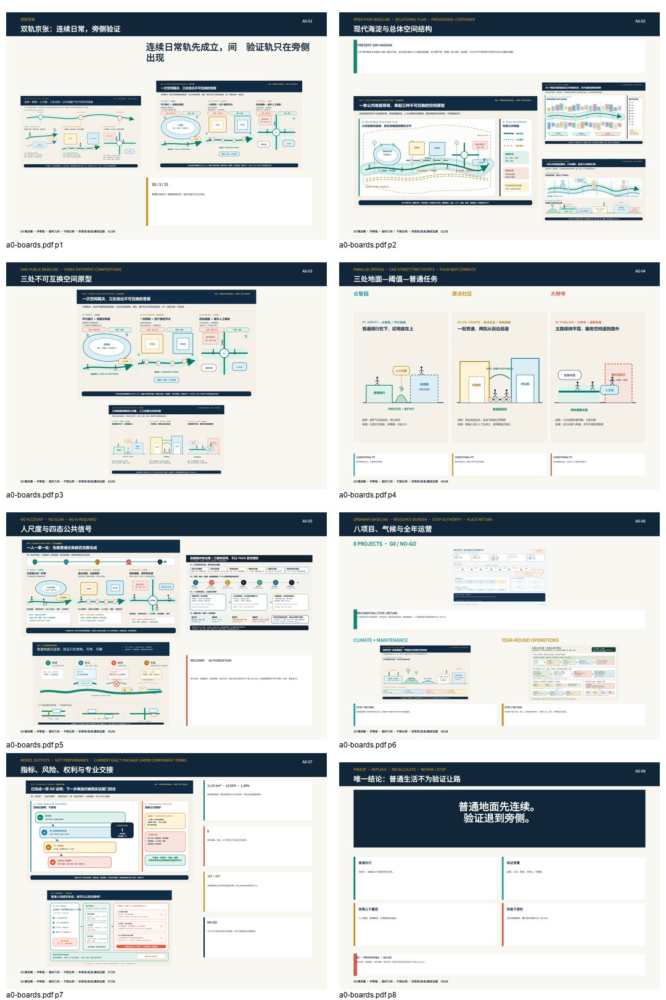

开源开发者
核对一次协作匹配，并能撤回。
进入 CO-CREATE 原型先选一处，再走五个动作，观察四种状态；最后才判断旁侧验证是否值得继续。
任何 AI 体验开始之前，人都应在无账户、无扫码、无屏幕、无网络、无 AI 的条件下完成同一基本任务。

七类角色来自既有方案。任选一张卡，从一件日常任务进入对应原型与现有场景；所有角色仍共享同一非 AI 底板、人工交接和停止权。
核对一次协作匹配，并能撤回。
进入 CO-CREATE 原型参加一次可退出的学习工坊。
进入 CO-CREATE 原型在旁置沙盒验证低速设备。
进入 VERIFY 原型完成一次可纠错的企业办事。
进入 PUBLISH 原型提出一次社区问题，并随时撤回。
进入 CO-CREATE 原型找到可达路线，并获得人工帮助。
进入 PUBLISH 原型核对一段有来源的铁路叙事。
进入 CO-CREATE 原型角色不是权限等级。这里没有真实用户画像、个体数据、现场反馈或已部署服务；它只是把既有七类人、12 个场景和三处原型组成更快的阅读入口。
先用一张同屏对照看清三处不能互换的空间裁决，再展开各自的五个动作。三个原型共用权利底板，但空间骨架、故障对象和恢复动作不能互换；以下均为概念演示，不是现场服务。

普通人始终走连续观察旁路；只有自愿、获准且有人接责的验证才进入旁侧庭。设备隔离不能侵占通行。
不可删除：连续旁路、实体急停、人工接管和独立复测门。
居民日常街先成立；两座院落是可选共创，不是进入社区服务的门槛。撤回与无屏安静必须在空间里可见。
不可删除：一街两院关系、四撤回点、无屏共学廊和居民静音门。
四向通勤中心保持净空；信息厅和人工台退到路径外。来源、排队或自动化出错时，通勤不能停。
不可删除：四向通勤十字、路径外证据厅、来源台账和人工办事并置。

绿色普通地面在所有状态中连续；蓝色验证只在旁侧出现；珊瑚色故障只隔离验证对象；恢复先还普通生活，不等于模型重启、批准或 G1。

概念动态图解，可选播放。54 秒只是编辑节奏，不是现实恢复时长；不播放、解码失败、打印或设置减少动态时，静态故事板仍提供完整答案。
这里显性展开原 demo 只用“任务覆盖”标签带过的总体结构、用地、慢行蓝绿、建筑与更新关系。全部仍是同一临时几何下的概念关系。
边界防误读：扩大 demo 的浏览深度，不平移、不缩放、不补画任何官方或临时 polygon；geometry 与 metrics 保持冻结。

连续日常轨先成立，间歇验证轨退到旁侧。

表达功能关系与接口，不把概念包络写成法定用地。

普通路径、无屏休息与人工交接优先于设备叠层。
建筑体块是关系原型；不形成拆改留、工程或权属结论。
每张卡只回答“谁的什么任务、在哪类空间、何时必须停”。分组不代表优先级、批准或现场结果。
SCENE-001低速配送沙盒众智园 · 越界或碰撞即停，人工牵引SCENE-003安全事件辅助研判众智园 · 不自动执法，越权即停SCENE-009无障碍路径助手大钟寺与接口 · 关键障碍即停推路线SCENE-010慢行拥堵提示公共绿道 · 误报影响通行即回静态导视SCENE-002公共空间能耗助手众智园与接口 · 安全照明受影响即回人工SCENE-005可信文化导览原点—里程标 · 来源争议无法核实即下架SCENE-011企业服务智能体大钟寺 · 错误影响办事即停并转人工SCENE-012社区健康导航大钟寺 · 出现诊断性输出即停SCENE-004失败与修正公开档案全带 · 记录暂停、纠错与主动退役SCENE-006开源协作匹配原点社区 · 可撤回，不进入招聘评价SCENE-007教育体验工坊原点社区 · 未成年人数据不外传SCENE-008气候与无障碍共同测试公共节点 · 分组共测，不用总体平均掩盖差异项目卡只把正文里已有的转化入口搬到可见 demo；不增加场地、预算、时序、责任主体或批准。
现实状态统一为 G0 / concept only。责任接受、人员班次、预算、获批窗口、现场结果、恢复时间与独立复测仍为 0 或待确认。

唯一 pre-G1 编辑候选是 JZ-05 × SCENE-011 × T-02。它已有合成治理回放，但无人接责、无现场批准、无现实结果。

独立人工双语复核：0/8，未签署。只在最终 PR exact head 上逐项比较；机器 PASS 只证明打包一致。下列工作表只公开抽检路径与问题，不预填结果、审阅者或 exact head。
展示层帮助人理解，不改变权威顺序：GeoJSON → metrics → 矩阵 → manifest/来源/假设/自检 → 正文 → 图件与 HTML。
缩略图谱由当前四份 PDF 确定性派生，只用于确认页数、顺序、版式连续性与中英配对；小字判断仍以原 PDF 为准，不构成新增设计证据。

